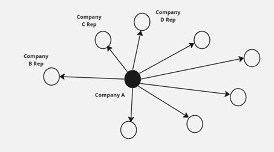
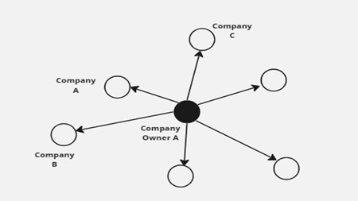

ISSS608 Visual Analytics & Applications Project (Group 3) Project Proposal
Project Title: A Fishy Business!
1.Introduction
FishEye International is a non-profit organisation which focuses on countering illegal, unreported, and unregulated (IUU) fishing. They had believed that companies with anomalous structures are far more likely to be involved in IUU. After obtaining access to an international database on fishing related companies including information about companies, owners, workers, and financial status, FishEye is aiming to use this graph to identify anomalies that could indicate a company is involved in IUU.
2.Project Objectives
For our project, we aim to achieve the following objectives: (a) Understand patterns of groups in the knowledge graph and highlight anomalous groups, (b) Identify anomalies in the business groups present in the knowledge graph, (c) Develop a visual analytics process to find similar businesses and group them based on important features identified, (d) Measure similarity of the grouped businesses, and (e) Present the case on whether anomalous companies are involved in illegal fishing, and highlight business groups that require further investigations.
3.Motivation behind the tasks
Our tasks are to assist FishEye in developing a new visual analytics approach to better understand fishing business anomalies. By accurately detecting and understanding anomalies, such as illegal or overfishing activities, the visual analytics approach can contribute to more effective fisheries management. This, in turn, promotes sustainable fishing practices, helps preserve marine ecosystems, and ensures the long-term viability of fish populations.
4.Problems that the team may face
The column “product_services” consists of a wide variety of products and services in different industries. Currently there is no guidance on the relationship between each products/services and we would need to establish the relevance of the different products/services related to fishing activities and to filter the values accordingly.
There is a need to find the correlations of different dimensions such as country, products_services and revenues and see if there are any prevalent patterns. There is lack of context to the data upfront, and we would have to make logical assumptions in our analysis.
There is a need to differentiate the type of role that each source and target belong to.
There are many fields with character(0) or unknown values that would need to be recoded in order to make the data analysis more accurate and meaningful.
It will be challenging to work on the voluminous data given there are 27622 nodes and 24038 edges.
5.Relevant Work and Proposed Approach
We will adopt the following methodology:
The group will meet up and brainstorm on the scope of the project as well as the deliverables that are relevant that can be mapped to meet our project objectives.
Data preparation will be carried out using data cleaning techniques to check for missing values, duplicates and inconsistencies in the data format and categorisation, as well as data transformation to mutate and derive suitable data variables for our analysis.
Carry out data exploration, with a focus on the following:
Identifying Outliers: Focus on outliers or data points that deviate significantly from the expected patterns. Outliers in the relationships between country, products_services, and revenues could indicate irregularities or anomalies in the companies. These outliers may help pinpoint areas that require further investigation.
Visualizing Correlations: Utilize visual analytics techniques to present the correlations between dimensions. Visualizations will be used to provide a clear and representation of variables interact and influence each other.
Build relevant visual network models to illustrate the characteristics of the business entities through the computation of centrality metrics and community grouping. Establish connections or edges between entities based on their interactions, collaborations, or dependencies.
With the results of the visualisation plots, analyse and reveal the connectivity (relationship) between the business entities, and to identify abnormalities within the network. Thes following are some of the proposed areas of our focus.
- Network analysis on the top x revenue-generating companies to explore the extensiveness of their network reach of these companies

- Network analysis on business owners owning more than certain level of companies to identify individuals with diversity of business ventures.

6.Scope of Work
The following table details the scope of work and responsibilities assigned to the respective members of the Team. The Team has also included a timeline to aid the Project’s internal progress monitoring.

7.Conclusion
The team aims to deliver useful insights on identifying potentially suspicious companies which may be involved in illegal fishing activities through various visualisation methods. This approach can serve as a reference for other projects with similar context of identifying anomalies. This proposal has been drawn up to guide the Team on the implementation approach to realise the project objective. All intermediate tasks will be carried out by the Team with adherence to the project timeline for the eventual submission of the project deliverables.